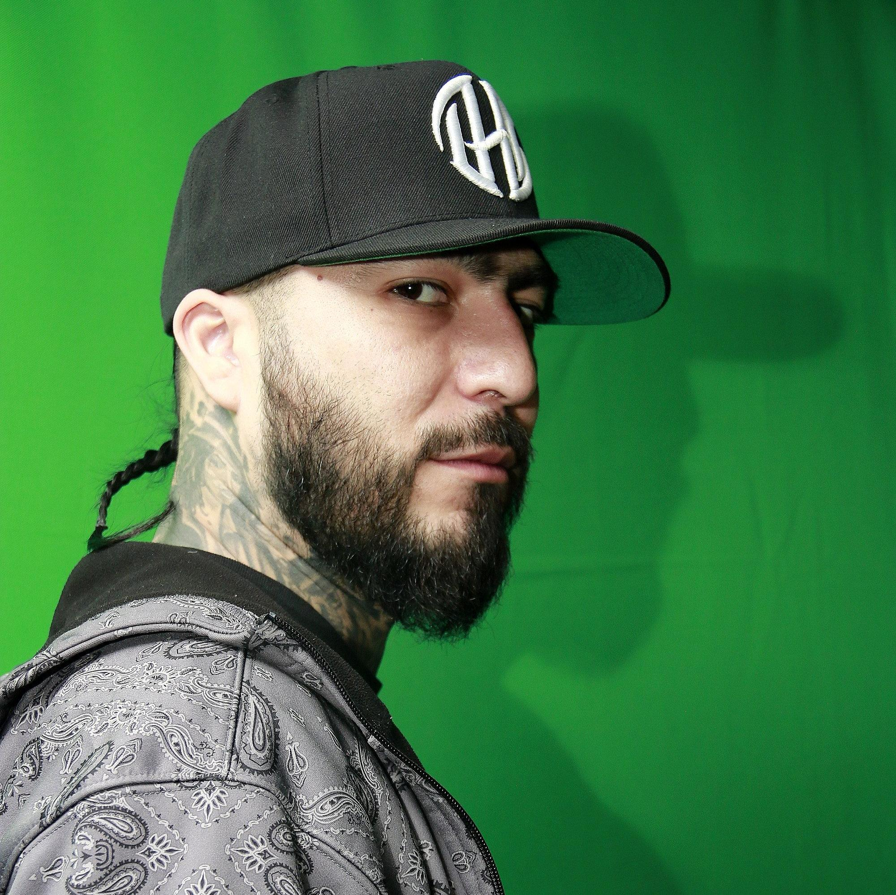
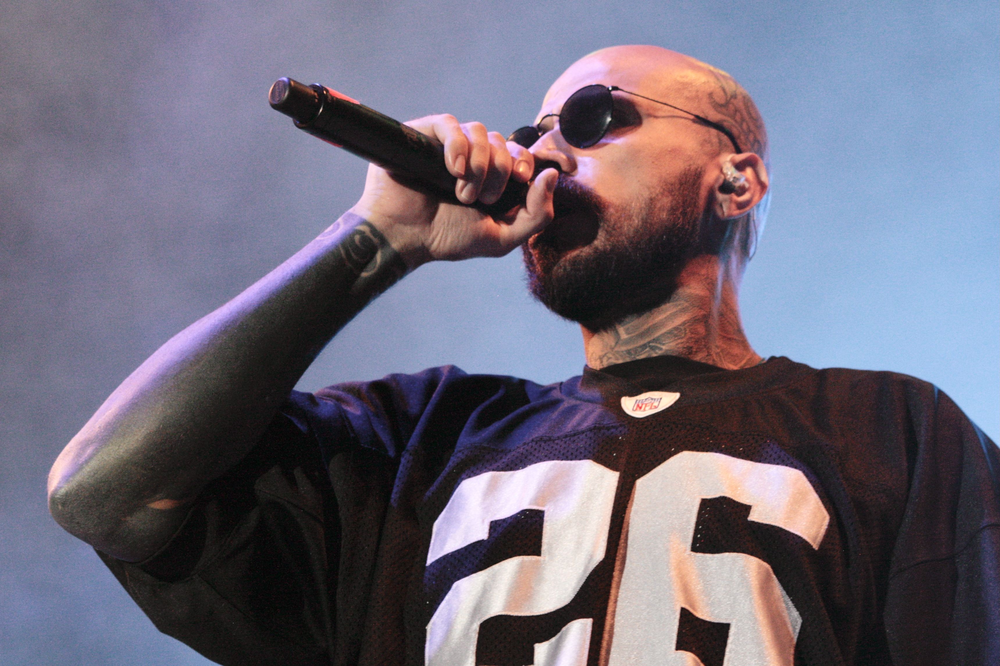
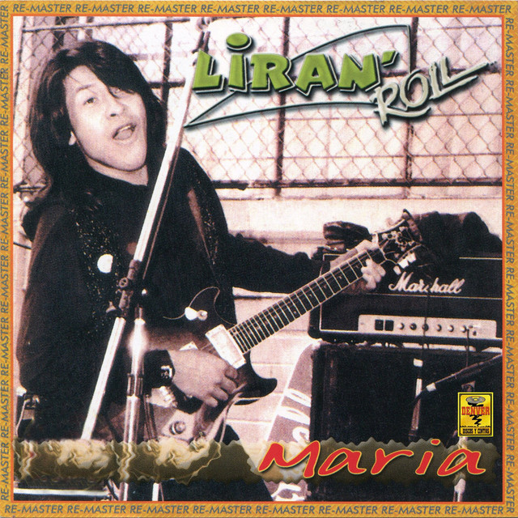

Mis Artistas Favoritos
¿Por que me gusta la musica?
La musica me gusta por que escucharla me hace sentir en un lugar seguro, tranquilo
y con paz. En las letras de las canciones muchas veces encuentro respuestas y me siento identificada
hay millones de letras de canciones sin embargo, hay solo un par de ellas
que te pueden llegar a cambiar de persepcion, y mas que canciones son poesias, es arte, son cartas al amor,
son despedidas, son paz, son sentimientos...!!!!
| DHA | BABO | LIRAN ROLL | CANCERBERO |
|---|---|---|---|
|  |  |  | |
| Dharius, cuyo nombre real es Alan Alejandro Maldonado Tamez, es un rapero y compositor mexicano. Es conocido por su paso por el grupo Cartel de Santa, donde colaboró desde 1999 hasta 2013. Tras su salida, continuó su carrera como solista, explorando nuevas facetas musicales. | Eduardo Dávalos de Luna (16 de noviembre de 1976, Santa Catarina, Nuevo León), conocido por su nombre artístico "Babo", es nacido en Santa Catarina (Nuevo León) , es el líder vocalista del grupo de rap Cartel de Santa |
Liran Roll es una banda de rock mexicana, conocida por su estilo que fusiona rock, blues y hard rock. Su líder, fundador y vocalista es José Antonio Lira Rostro, nacido el 13 de junio de 1965. La banda se formó en 1991 y desde entonces ha sido una de las figuras más importantes de la escena rock en México. |
Canserbero, cuyo nombre real era Tirone José González Orama, fue un rapero, compositor y activista venezolano nacido el 11 de marzo de 1988 y fallecido el 19 de enero de 2015. Es considerado una de las figuras más influyentes en la historia del rap latino e independiente en Latinoamérica. |